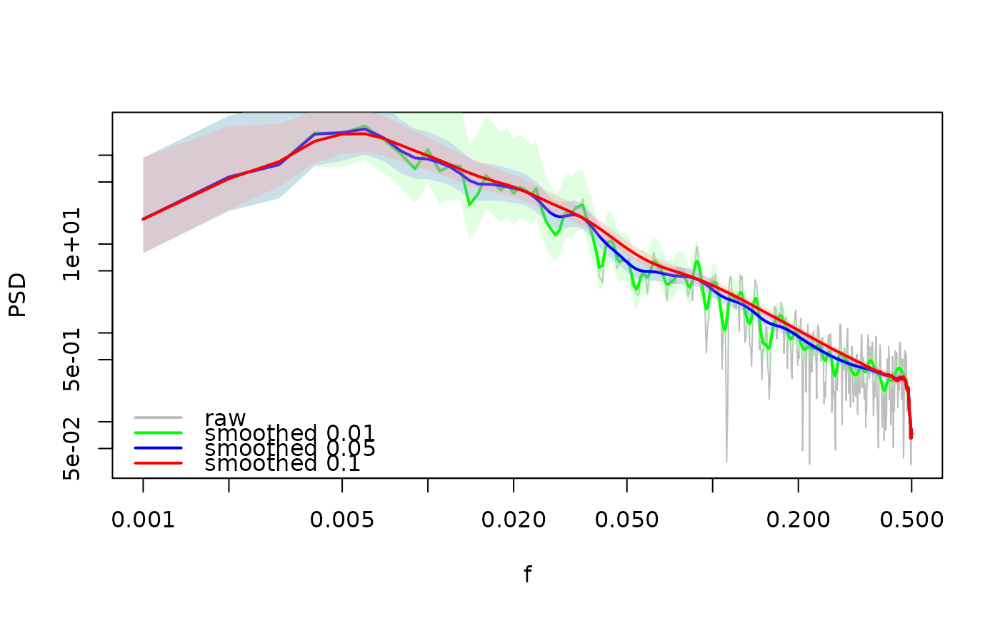
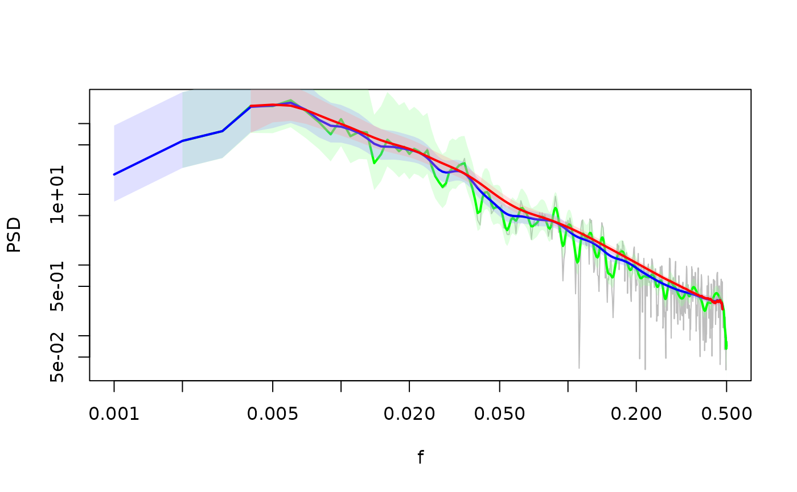

Smooths the spectrum using a log smoother
LogSmooth.RdSmooths the spectrum using a log smoother
Arguments
- spectra
spectra: list(spec,freq) spec[specIndex]: spectra density vector freq[specIndex]: frequency vector
- df.log
width of the smoother in log units
- removeFirst
elements to remove on the slow side (one element recommended because of the detrending)
- removeLast
elements to remove on the fast side
- bLog
TRUE: average in the log space of the power, FALSE: arithmetic average
See also
Other functions to filter / smooth spectra:
FilterSpec(),
FilterSpecLog()
Examples
x<-ts(arima.sim(list(ar = 0.9),1000))
spec<-SpecMTM(x)
LPlot(spec,col='grey')
LLines(LogSmooth(spec,df.log=0.01),lwd=2,col='green')
LLines(LogSmooth(spec,df.log=0.05),lwd=2,col='blue')
LLines(LogSmooth(spec,df.log=0.1),lwd=2,col='red')
legend('bottomleft', col=c('grey','green','blue','red'),
lwd=2,c('raw','smoothed 0.01',
'smoothed 0.05', 'smoothed 0.1'), bty='n')

# Removal of lower (first) and higher (last) frequencies
LPlot(spec,col='grey')
LLines(LogSmooth(spec,df.log=0.01, removeFirst = 1),lwd=2,col='green')
LLines(LogSmooth(spec,df.log=0.05, removeLast = 20),lwd=2,col='blue')
LLines(LogSmooth(spec,df.log=0.1, removeFirst = 3, removeLast = 20),lwd=2,col='red')
